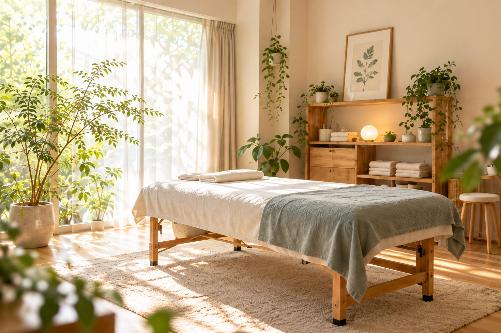
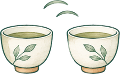
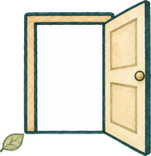

初回体験
3,300円
60分
ヒアリングを含む目安時間です。
余白日和 整体室
架空・練習作品
肩や腰まわりのこわばりが気になったら。まずは今の状態やご希望を伺い、内容をご説明してから、無理のない範囲で進めます。

受付曜日
| 月 | 火 | 水 | 木 | 金 | 土 | 日 |
|---|---|---|---|---|---|---|
| 休 | 受付 | 受付 | 受付 | 受付 | 受付 | 休 |
座りっぱなしの

仕事や

初めてなので、
気になることや
初回は、
3,300円
60分
ヒアリングを含む目安時間です。
※料金と時間は架空の設定です。
実際の予約・送信は行われません。
以下は、
架空の文章例
話を急がず
聞いてもらえて、 当日の流れも 先に分かったので、 落ち着いて 過ごせました。
架空の文章例
説明が
分かりやすく、 気になることを 相談しながら 進められるのが よかったです。
架空の文章例
静かな雰囲気で、
仕事帰りにも 立ち寄りやすそうだと 感じました。
初回は、
はじめにお話を伺い、
このページは架空・練習作品のため、
架空の店舗のため、
このページは架空・練習作品です。